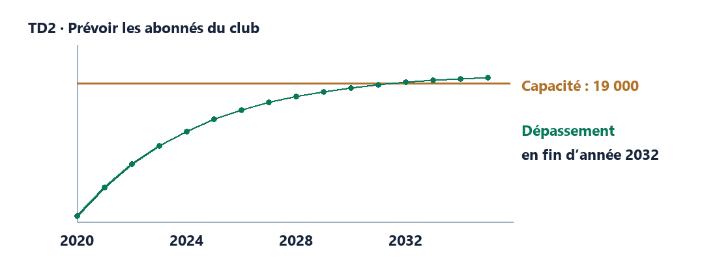

Comprendre le cours
1. Comparer des expressions près d’un point
f∼g signifie que f/g tend vers 1 dans le voisinage considéré. f=o(g) signifie que ce rapport tend vers zéro. Écris toujours où tu te places. Par exemple x∼1+x à l’infini, tandis qu’en zéro x=o(1+x). Deux expressions ne se comparent donc pas sans préciser le lieu.
Les équivalents se combinent bien par produit et quotient lorsque les expressions conviennent. Pour une somme ou une différence, surveille les annulations. Un développement limité écrit les premiers termes avec un contrôle du reste. Quand les termes principaux disparaissent, il permet de trouver le premier terme qui reste.
2. Lire une suite et établir sa limite
Une suite uₙ associe un nombre à chaque indice entier. Une suite arithmétique ajoute toujours une même différence et une suite géométrique applique toujours un même facteur. Une récurrence affine uₙ₊₁=q uₙ+b se simplifie en cherchant une valeur fixe L=qL+b. L’écart uₙ−L suit alors une suite géométrique.
Une suite croissante et majorée converge. Une suite seulement bornée peut osciller. Pour établir une limite à partir d’une relation de récurrence, prouve la convergence ou trouve une expression explicite avant de promettre que la limite existe.

3. Reconnaître un espace, une famille libre et une base
Un sous-espace vectoriel contient zéro et reste stable par combinaison linéaire. Les solutions d’une équation linéaire homogène forment par exemple un sous-espace. Remplacer le membre droit par 1 peut exclure le vecteur nul.
Une famille est génératrice si ses combinaisons atteignent tout l’espace considéré. Elle est libre si la seule combinaison donnant zéro utilise des coefficients tous nuls. Une base satisfait les deux conditions. Le nombre de vecteurs d’une base donne la dimension.
4. Comprendre noyau et image d’une application linéaire
Une application linéaire préserve les combinaisons, donc f(αu+βv)=αf(u)+βf(v). Pour exhiber une application non linéaire, un seul échec avec des vecteurs et des coefficients suffit.
Le noyau rassemble les entrées envoyées sur zéro. L’image rassemble les valeurs atteintes. Les colonnes d’une matrice d’application sont les images des vecteurs de la base de départ, écrites dans la base d’arrivée. Le rang est la dimension de l’image. Une application est injective si son noyau est réduit à zéro, et surjective si son image couvre tout l’espace d’arrivée.
Comment savoir quels produits garder dans un développement limité ?
Dans eˣ ln(1+x), cherche séparément les termes qui peuvent fabriquer du x². Il y a 1 × (−x²/2) et x × x. Le terme x²/2 de l’exponentielle rencontre au minimum un x dans le logarithme et donne déjà du degré 3.
La somme des deux contributions du degré 2 vaut x²/2. Vérifie avec x = 0,1 : l’approximation x + x²/2 donne 0,105, cohérente avec le produit d’environ 0,10533.
Du cours aux TD et TP
Questions TD & TP
Feuille 1, ex. 5 · Développer eˣ ln(1+x) à l’ordre 2
Énoncé. Déterminer le développement limité en zéro à l’ordre 2 de eˣ ln(1+x).
- Écris
eˣ=1+x+x²/2+o(x²)etln(1+x)=x−x²/2+o(x²). - Multiplie en gardant jusqu’au degré 2. Le premier terme vaut
x. Au degré 2,−x²/2+x²=x²/2. - On obtient
x+x²/2+o(x²). Vérifie que le produit initial vaut zéro en x=0, comme l’expression approchée.
Feuille 2, ex. 7 · Quand le stade manquera-t-il de places ?
Énoncé. Le club part de 7000 abonnés en 2020. Chaque année il garde 80 % des abonnés et en gagne 4000. Il dispose de 19 000 places.
- Pose
a₀=7000etaₙ₊₁=0,8aₙ+4000. L’état fixe vaut20000. - L’écart suit
aₙ−20000=−13000×0,8ⁿ. Comme0,8ⁿtend vers zéro, la limite vaut 20 000. - Il faut
0,8ⁿ<1/13pour dépasser 19 000. Au 11ᵉ pas, le nombre reste inférieur. Au 12ᵉ, il est supérieur. Le dépassement est prévu à la fin de 2032 dans ce modèle.
Feuille 3, ex. 1 · Tester x+y=0, x+y=1 et y=−2x²
Énoncé. Parmi ces trois ensembles du plan, déterminer ceux qui forment un espace vectoriel.
- Pour
x+y=0, zéro appartient à l’ensemble et toute combinaison de deux solutions satisfait encore l’équation. C’est une droite vectorielle. - Pour
x+y=1, zéro échoue immédiatement. Poury=−2x², le vecteur(1,−2)convient, tandis que son double(2,−4)échoue. Les deux ensembles ne satisfont pas la définition.
Feuille 4, ex. 1 · Repérer ce qui rend une application linéaire
Énoncé. Tester f(x,y)=(x²,3y) et g(x,y)=(x+y,x−2y,0).
f(1,0)=(1,0), donc le double de son image est(2,0). Orf(2,0)=(4,0). L’homogénéité échoue.- Les composantes de
gsont des formes linéaires en x et y. La matrice a pour colonnes(1,1,0)et(1,−2,0). Pourg(x,y)=0, soustrais les deux premières équations et trouvey=0puisx=0. - Les deux colonnes indépendantes engendrent le plan
z=0. Ainsigest injective et atteint ce plan dansℝ³.